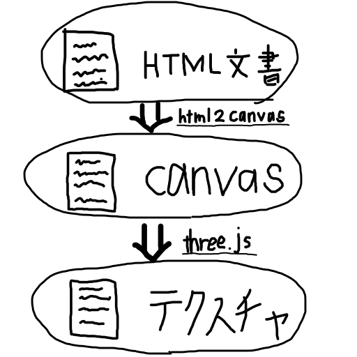

55代ヘビです
ゲーム作りたい〜と慢性的に考えてるけど、
面白いゲームが作れなくて悩ましいお年頃。。
0
three.jsを利用した、簡単な3Dwebサイト
1
・一度に見れる情報量が少ない
3
・移動する必要があり時間がかかる
（2Dでは単にスクロールすれば良いが...）
4
斜めで見辛い
（2Dでは常に正面）
5
もっと情報取得を楽にしたい
6
注）古いブラウザではできないことも
8
WebGLを利用して比較的簡単に3D表現できる
(ゲームを作る場合はunityのWebGLビルドが楽そう？)
htmlをcanvasに描画できる
9
10
11
12
テクスチャとは物体表面の模様などを表すものです
イメージ
12
テクスチャ としては、画像、動画、htmlのcanvas、等が使える。しかし、htmlのdom要素はテクスチャ として使えない
→htmlのdom要素をcanvasに描けばいいのでは？
13
html2canvasを使ってcanvasにhtmlの内容を描画
その後、描画したcanvasを物体のテクスチャに設定した
ページ拡大すると適切に表示されない、リンクボタンが効かない、など問題はある、、
14
15
時間がなくできなかった
16
17